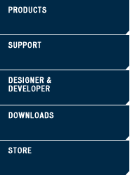

| systems |
| home page |
| com Internet marketing reference and extensive collection of Internet marketing articles. Louis (PUGSL) Saint Louis Linux Users Group Saint Louis Unix Users Group St. Louis Visual FoxPro User Group Society for Technical Communication (STC) - St. We work behind the scenes to help your client's sites rise to the top. We work directly with select businesses that are serious about their online success. |
|  |